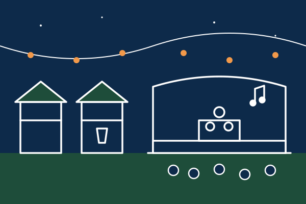

Programme
Du mercredi 9 au dimanche 13 juin 2027, de 10h30 à 18h sur l’eau. Le village reste ouvert jusqu’à 22h30 le samedi et le dimanche.
Le déroulé d’une journée
-
10h30
Accueil
Retrait des badges, remise des gilets de sauvetage et visite du village.
-
11h00
Briefing sécurité
Présentation du bateau, des règles de navigation et de la zone autorisée.
-
11h30 – 13h00
Initiation et navigation libre
Sortie avec un skipper valide ou handi, puis navigation libre dans une zone délimitée et surveillée.
-
13h00 – 14h00
Pause déjeuner
Buvette à petits prix et stands associatifs.
-
14h00 – 16h30
Parcours de bouées
Un parcours balisé pour apprendre à virer de bord et à contourner une marque.
-
16h30 – 17h30
Régate handivoile
Une course sur Hansa ouverte aux participants qui se sentent prêts.
-
17h30 – 18h00
Remise des prix
Un prix remis par chaque partenaire de la journée.

Jour par jour
| Date | Sur l’eau | Au village |
|---|---|---|
| Mercredi 9 juin | 10h30 – 18h00 | Buvette et stands associatifs |
| Jeudi 10 juin | 10h30 – 18h00 | Buvette et stands associatifs |
| Vendredi 11 juin | 10h30 – 18h00 | Buvette et stands associatifs |
| Samedi 12 juin | 10h30 – 18h00 | DJ set en soirée, village ouvert jusqu’à 22h30 |
| Dimanche 13 juin | 10h30 – 18h00 | Concert de clôture, village ouvert jusqu’à 22h30 |
Le village partenaires sera ouvert selon les partenaires confirmés.